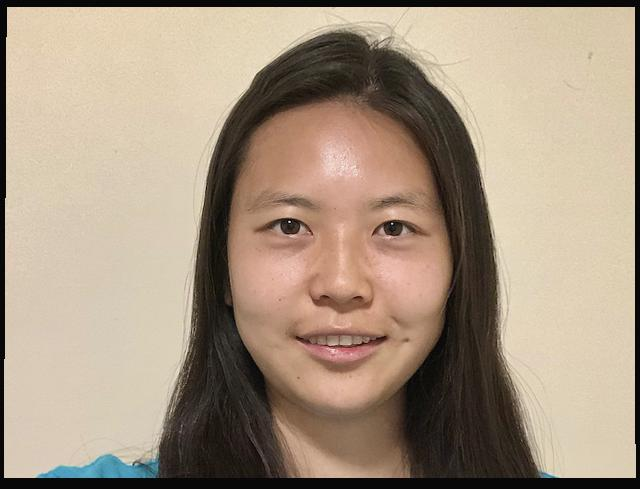

Overview
In this project, I played around with different image morphing techniques involving warping
and interpolating colors to combine multiple images.
Defining Correspondences
Here are the self-selected correspondence points and the Delaunay triangulation created
over the average points overlayed on top of each image.
Midway Face
 Original George
Original George
This is the exact midway face which contains color dissolves using 50% of my image's colors
and 50% of George's. Our faces were each morphed to the average points of both correspondences.
Morph Sequence
Unfortunately, due to file size issues (the gif is 28MB!), I am not able to display it
on the website but here is a link to the gif on youtube. To create this gif, I created a series of midway
frames where each had a different warp and dissolve factor ranging from 0 to 1 which produced the
smooth transition from my face to George's.
Mean Face
My face morphed onto mean Dane
Mean Danes morphed onto my face
I computed the mean Dane face by taking the average points of all Dean faces and warping each
Dane face to this average triangulation template and then setting the color dissolve to 1/N where
N is the number of Dane faces.
Caricatures

Low Caricaturealpha = 0.5
High Caricaturealpha = 1.5
The caricatures turned out really strange and I'm guessing this was because of the way
I identified correspondences (I manually selected them by hand) so it was difficult to get
the points to match up exactly especially since the mean Danes face was a lot smaller than my own.
I noticed that a smaller alpha worked better and this is likely due to the fact that my face
is a lot more similar to the opposite of a normal Dane's face.
Bells & Whistles
For the bells and whistles section, I implemented a morphing of my own face from when I was 7 up
until a recent picture and then ending with a picture of my mom (what I will look like in the future?).
I hand-selected correspondence points and produced a series of morphings between each sequence of images
to create the final result. Link to youtube video can be found here.